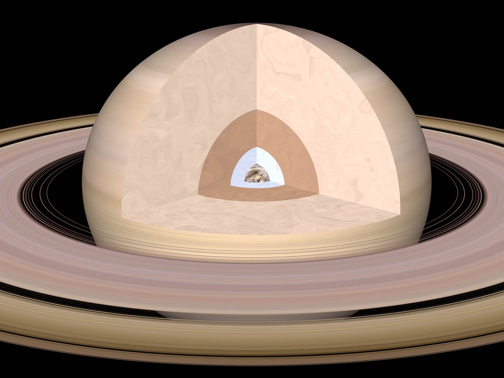

Сатурн

Масса Сатурна больше массы Земли в 95 раз. На Сатурне дуют очень сильные ветра, скорость которых достигает 1800 км/ч. Год на Сатурне длится 30 земных лет и состоит из 4 сезонов. У Сатурна 62 спутника, самым крупным является Титан.
На главную